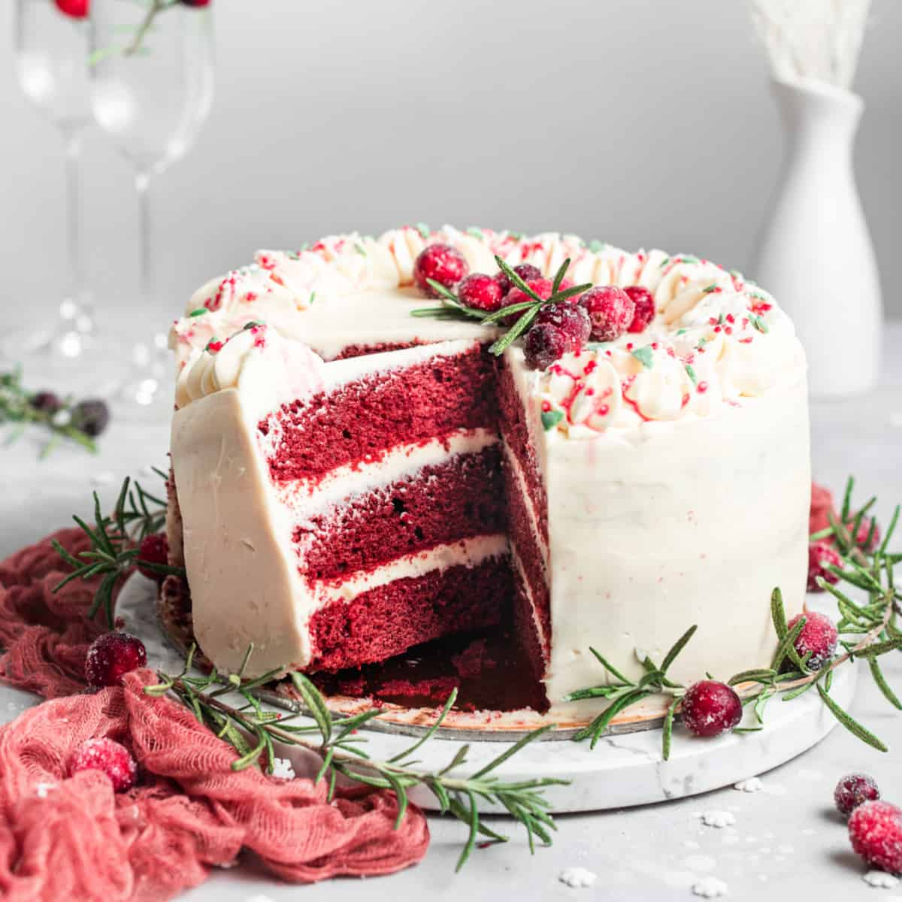
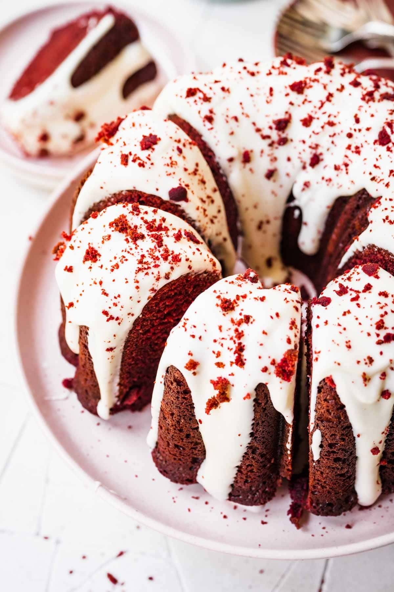
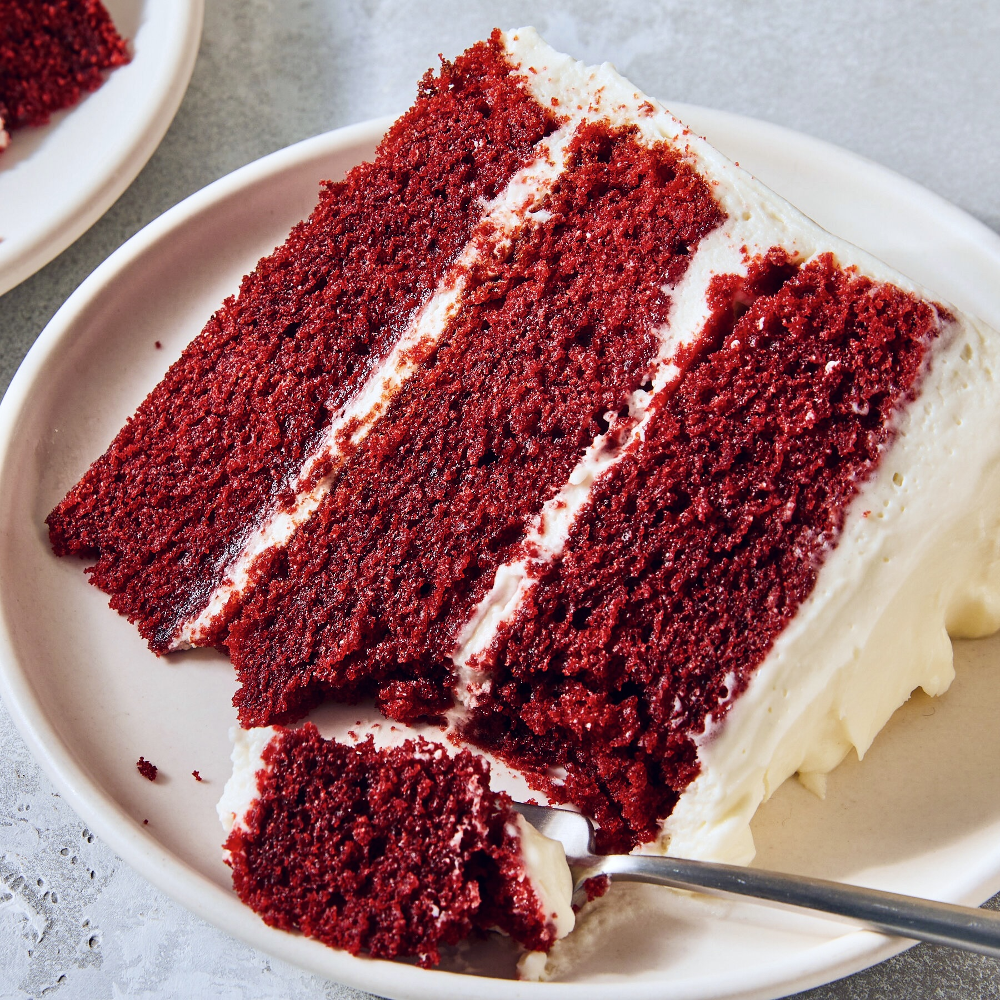

This website is about preparing for Christmas with a recipe of the Red Velvet Bundt Cake. What better way to celebrate Christmas than to eat your own very Christmas-themed holiday cake! It is impossible for the red in Red Velvet cakes to clash with the decor of your Christmas home.
This webpage provides a very delicious red velvet bundt cake recipe for your very own spontaneous baking impulses!

The Red Velvet Bundt Cake is a moist, classic red velvet cake recipe made w/ buttermilk and sour cream, topped with cream cheese frosting! This recipe's beautiful Southern Red Velvet Cake is a classic cake recipe that is surely a favorite for holiday seasons and special celebrations everywhere.
Want to start baking? Click here to view the recipe and list of ingredients.

Popular in the southern U.S., red velvet cake is a vanilla cake with a few tablespoons of cocoa powder and red food coloring mixed in. Vinegar and buttermilk add a bit of tanginess that balances out the sweet cream cheese-butter frosting that is standard. The crumb of the cake is also very fine, soft and smooth. Its cream cheese frosting differeniates it from most cakes. Lastly, their Meghann's current cravng.